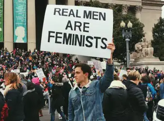
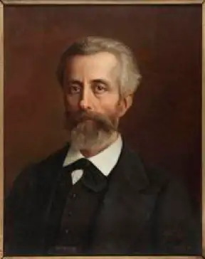
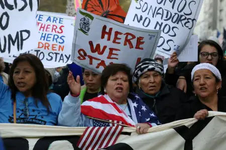

Feminism is not only women who fight for their rights and their role in society. For the story and still today, men have been interested and involved in feminism. Although they are in minority, it is important to show them as it is only with the support of men and the evolution of their mind that our society can improve itself.
The masculin feminism
When we talk about feminism, we often think about women who fight for women. However men have too participated in their emancipation.

Feminist demonstration
Actives feminist
As soon as 1673 philosophe Poulain de la barre speaks about equality between men and women in his book De l’égalité des deux sexes. According to him :
intellect has any gender
He broaches about some sociology’s concept as he thinks that reproductive fonctions have any influence on feminine’s capacities. It is rather their education. At the time he is alone to think that, in fact his vision is not very shared.
A century later, he was supported by Nicolas de Condorcet which confirmed Poulain de la Barre's thinking.
Indeed, according to him, the difference between men and women is not natural. It comes from our society and her laws which deprive women of education and reinforce masuline’s superiority.
It is particularly at the end of the 18 century and during the 19 century that a lot of intellectuals begin to become in favour of gender’s equality. It is the case of Pierre Choderlos de Laclos, writer about De l’éducation des femmes in which he defends the idea that women are not men’s partners but their slaves ; or else John Stuart Mill with his book De l’assujettissement des femmes.
Some men like René Viviani, Ferdinand Buisson or Léon Richer, which according to Simone de Beauvoir is “the real founder of feminism”, has influenced feminism a lot. Indeed, in 1870 Léon Richer created the Organization for Women’s rights, and then the International Congress of Women’s rights.

Léon Richer
Men are more and more interested in feminism and participate in thinking and progress about it. Thus, even if they are not a lot, they merited to be recognized.
Today, some men are involved in feminism : Barack Obama supports actively this case, Pharrell Williams is also involved in his songs for feminism, Prince Harry is committed for girl’s education access all around the world, or else Mark Ruffallo has signed a letter to defend abortion right and has also done the "Women’s walking” in 2016 to promote equality between gender.

Women’s walking on Washington
Feminist but not heros
We have to make a difference between recognizing the role of some men in feminism's fight and taking them to heros. Indeed, men don’t have to invisibilize women in their fight.
Women stay people the most involved and from we owe the majority of progress in equality between gender. We have to admit existence of feminist men and their contribution in the progress for women’s rights, without forget that they are in minority.
However, they forget that women are in majority in this fight for women’s rights, and that a lot of men are sexist, misogynist and against the development of women’s situation.
Finally, stand out feminist men let thinking that be a men can’t be compatible with being feminist as it is two different things. Nevertheless, today, more and more men are feminist and it is very important for a well developpement of our society.